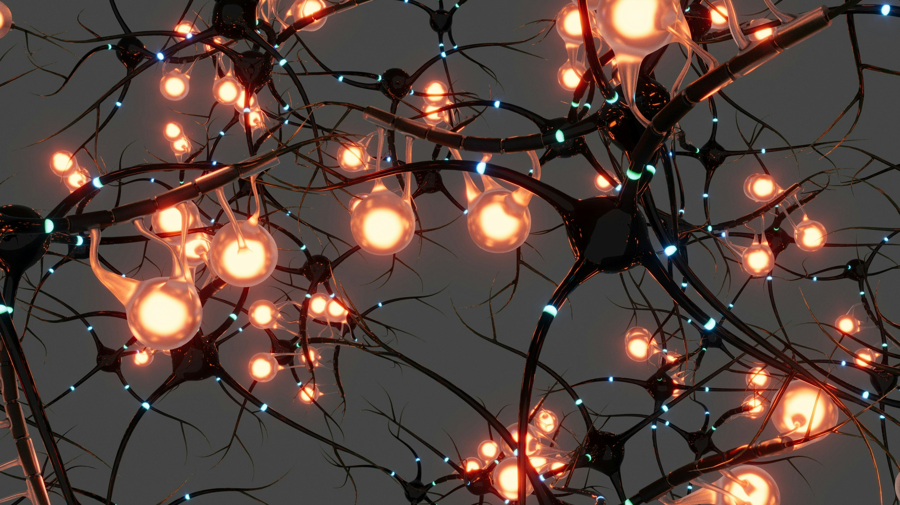

Research
Redefining the Architecture of Intelligence.
Our research focuses on neuromorphic chip design, hardware–algorithm co-design, computing architectures, and RRAM-enabled in-memory computing.

Themes
Areas of inquiry
The research themes below describe the group’s core areas of inquiry.
“Neuromorphic chips, computing architectures, and RRAM-enabled in-memory computing for efficient artificial intelligence.”